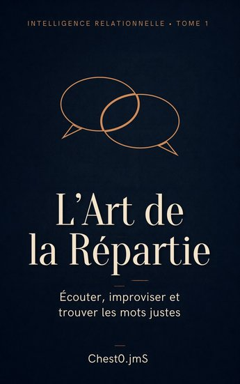

L'ART DE LA RÉPARTIE
Tome 1 de la série Intelligence relationnelle. Une méthode pas à pas pour écouter avant de répondre, garder son rythme et trouver des mots justes, clairs et respectueux, même sous pression : 28 situations concrètes, avec exercices et corrigés.
Voir sur AmazonLivre audio — GumroadLivre audio — Kobo